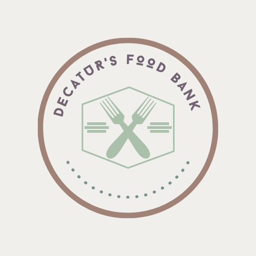

 ">
Decatur's Food Bank is a non-profit organization that has the mission of giving first necessity products such as food to people who need it. Volunteers give up their free time to come and help us make the world a little better by supplying people with essential products. Decatur's Food Bank has over 130 volunteers every week, including students, parents, supermarket workers and elderly people. We also have some visits from local schools who want their students to contribute wiht this cause and participate in this volunteer work. We do monthly events that are crucial for making our project grow. These include family races, hikes, banquets, occasional car washes, dance shows and many other activities that are done with the purpose of having fun while contributing to a good cause.